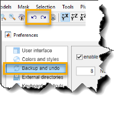

Did you know...
- Press Ctrl+Z to undo the last action.
- Use the left and right arrows in the toolbar to undo or redo multiple actions
- Adjust the number of history steps in
MIB → Menu → Preferences → Backup and undo
|  |
Made a mistake? No worries - most actions can be undone:
|